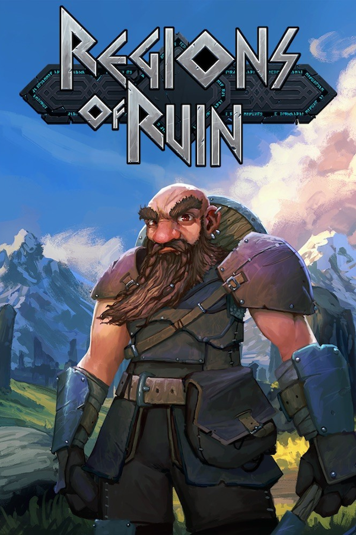

Regions Of Ruin
Regions Of Ruin
Details
|  | |
| Playtime | 14h 24m 0s |
| Last Activity | 14/03/2023 18:58:00 |
| Added | 5/06/2025 3:25:10 |
| Modified | 8/06/2025 5:32:23 |
| Completion Status | In Progress |
| Library | Steam |
| Source | Steam |
| Platform | Macintosh PC (Windows) |
| Release Date | |
| Community Score | |
| Critic Score | |
| User Score | |
| Genre | Action Adventure Indie RPG |
| Developer | |
| Publisher | |
| Feature | Achievements Cloud Saves Family Sharing Partial Controller Support Single-Player Trading Cards |
| Links | Community Hub Discussions Guides News Store Page PCGamingWiki Achievements |
| Tag | 2D 2D Platformer Action RPG Adventure Atmospheric Base Building Building Colony Sim Dungeon Crawler Dwarf Exploration Fantasy Hack and Slash Indie Pixel Graphics Platformer Resource Management RPG Side Scroller Singleplayer |
Description
Ever wonder what would happen if Kingdom met a broad, skill based open world RPG? Welcome to Regions of Ruin.
Regions of Ruin is a 2D side-scrolling RPG with town-building where you are introduced to an open world that progressively challenges your hero and settlement the further you delve into the vast continent.
You will discover a foreboding land ravaged by hundreds of years of hardship. Where, kingdoms have risen and fallen, settlements have been laid to waste and overrun by warring groups, and great mysteries lay hidden and waiting to be unearthed - assuming you can defeat their jealous guardians.
Main Features include:
• Styled combat system with stats and levelling
• Skill tree to focus your fighting style
• Extensive loot and rare items to discover
• Forge your own equipment or smelt it for resources
• Open world exploration with a hand crafted environment, no randomized maps or levels, everything you see has been made with care
• Customised town building and expansion
• Rescue and recruit dwarves for your township (save them from extinction!)
• Send workers to harvest resources from explored regions
• Hire Mercenaries to help in battle
• Multitude of Quests and a main storyline
Regions of Ruin is a 2D side-scrolling RPG with town-building where you are introduced to an open world that progressively challenges your hero and settlement the further you delve into the vast continent.
You will discover a foreboding land ravaged by hundreds of years of hardship. Where, kingdoms have risen and fallen, settlements have been laid to waste and overrun by warring groups, and great mysteries lay hidden and waiting to be unearthed - assuming you can defeat their jealous guardians.
Main Features include:
• Styled combat system with stats and levelling
• Skill tree to focus your fighting style
• Extensive loot and rare items to discover
• Forge your own equipment or smelt it for resources
• Open world exploration with a hand crafted environment, no randomized maps or levels, everything you see has been made with care
• Customised town building and expansion
• Rescue and recruit dwarves for your township (save them from extinction!)
• Send workers to harvest resources from explored regions
• Hire Mercenaries to help in battle
• Multitude of Quests and a main storyline